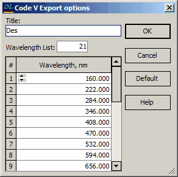

Export Code V sequence file
Export Code V sequence file
OptiLayer provides the capability to export the design description in a sequence file format compatible with the CODE V Lens Design software by Optical Research Associates (website: http://www.opticalres.com). During the export process, certain materials may need to be converted to a tabular format. Therefore, it is important to specify the wavelength grid for the tabular representation of these materials. Additionally, users have the option to specify a Title for the exported design (this title is distinct from the actual file name), with the default title being the name of the current OptiLayer design. This feature allows for customization and organization of the design data being exported for seamless integration with CODE V Lens Design software.

When you click the Default button, OptiLayer generates an evenly spaced wavelength grid with 21 points ranging from 400 to 800 nm. After clicking the OK button, a dialog box titled “Save as Code V sequence file” will appear. In this dialog box, you can specify an arbitrary name and location for the exported CODE V sequence file. The default extension for the saved file is *.seq. This process allows you to customize the filename and storage location for the exported sequence file, providing flexibility in organizing and managing your design data for integration with the CODE V Lens Design software.